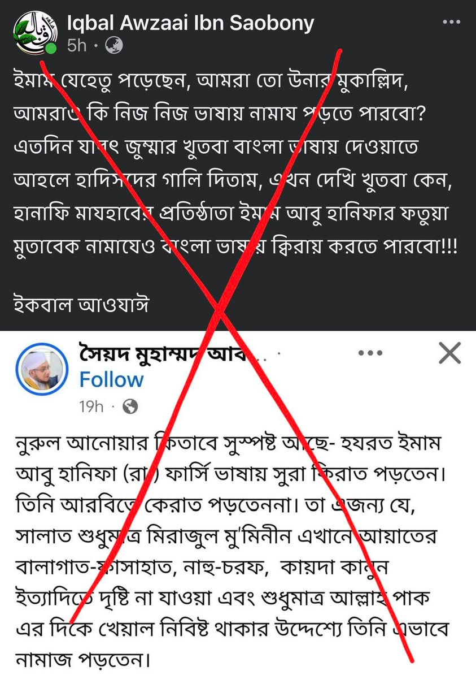

এটা ইমাম আবু হানিফা রাহ-এর নামে সুস্পষ্ট মিথ্যাচার। তিনি প্রথম জীবনে ফার্সিতে কেরাআত…
৩১ মে, ২০২৬
এটা ইমাম আবু হানিফা রাহ-এর নামে সুস্পষ্ট মিথ্যাচার। তিনি প্রথম জীবনে ফার্সিতে কেরাআত পড়ার বৈধতার কথা বলেছিলেন ঠিক কিন্তু তিনি ফার্সিতে পড়তেন, এমন কোনো প্রমাণ নেই। বরঞ্চ, পরবর্তীতে তিনি তাঁর এ রায় পরিহার করে সাবেহাইনের মতের প্রতি রুজু-প্রত্যাবর্তন করেন। তাঁদের মতে আরবি পড়তে সক্ষম ব্যক্তির জন্য অনারবি ভাষায় কেরআত পড়া বৈধ নয়।
এ কারণে আদ-দুররুল মুখতারে এসেছে—
والأصح رجوعه إلى قولهما وعليه الفتوى.
“বিশুদ্ধ মত হলো তিনি (আবু হানিফা) তদের দু'জনের (আবু ইউসুফ ও মুহাম্মাদ) মতের দিকে রুজু করেছেন এবং ফতোয়া এর উপরেই।”
[১/৬৭]
এটা ইমাম আবু হানিফা রাহ-এর নামে সুস্পষ্ট মিথ্যাচার। তিনি প্রথম জীবনে ফার্সিতে কেরাআত পড়ার বৈধতার কথা বলেছিলেন ঠিক কিন্তু তিনি ফার্সিতে পড়তেন, এমন কোনো প্রমাণ নেই। বরঞ্চ, পরবর্তীতে তিনি তাঁর এ রায় পরিহার করে সাবেহাইনের মতের প্রতি রুজু-প্রত্যাবর্তন করেন। তাঁদের মতে আরবি পড়তে সক্ষম ব্যক্তির জন্য অনারবি ভাষায় কেরআত পড়া বৈধ নয়।
এ কারণে আদ-দুররুল মুখতারে এসেছে—
والأصح رجوعه إلى قولهما وعليه الفتوى.
“বিশুদ্ধ মত হলো তিনি (আবু হানিফা) তদের দু'জনের (আবু ইউসুফ ও মুহাম্মাদ) মতের দিকে রুজু করেছেন এবং ফতোয়া এর উপরেই।”
[১/৬৭]
